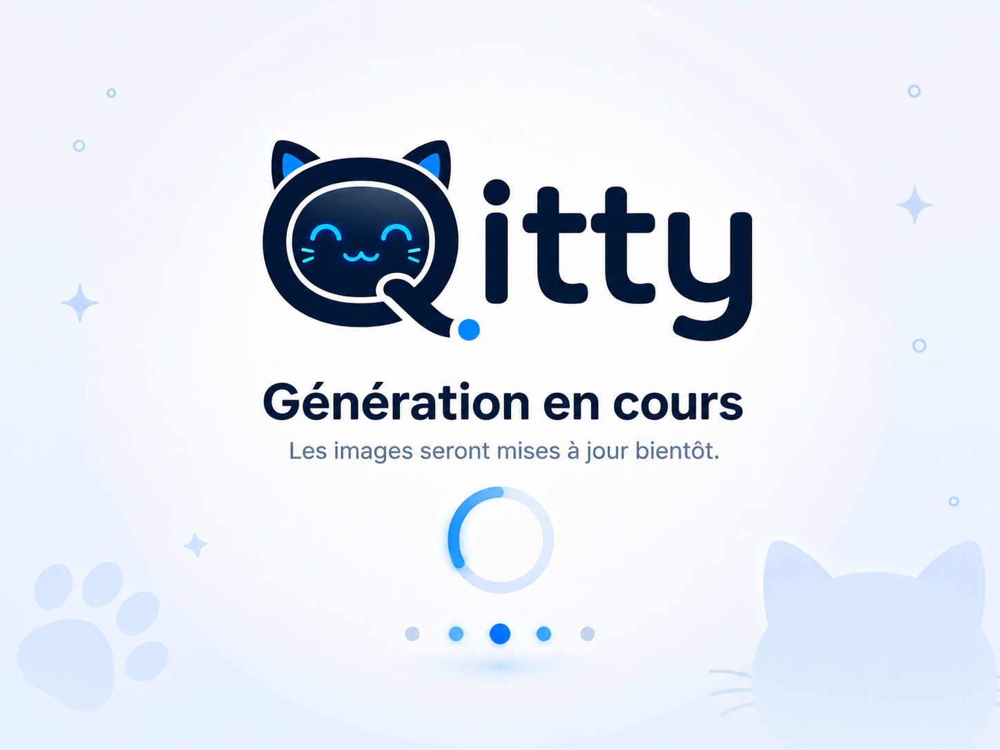

▥
Analyse des tâches
Nous identifions ce qui compte vraiment et ce qui vous ralentit.
→
Qitty® aide particuliers et PME à automatiser leurs tâches, structurer leurs workflows et gagner du temps grâce à des solutions IA simples, concrètes et adaptées à leurs besoins.
Nous identifions ce qui compte vraiment et ce qui vous ralentit.
→Des solutions adaptées à vos processus et outils métiers.
→Nous pilotons les résultats et maximisons votre retour sur investissement.
→Choisissez votre parcours et découvrez un accompagnement concret, humain et orienté résultats pour automatiser intelligemment votre quotidien ou vos opérations.
Chez Qitty®, nous pensons que l’intelligence artificielle doit rester un outil au service de l’humain. Nos solutions sont conçues pour réduire la charge mentale, automatiser les tâches répétitives et améliorer le confort de travail sans enlever le contrôle aux utilisateurs. Nous privilégions une approche progressive, transparente et rassurante afin que chacun puisse intégrer ces outils à son rythme, avec compréhension, accompagnement et maîtrise des décisions importantes.
Qitty® accompagne les particuliers, indépendants, PME et organisations dans la modernisation de leurs pratiques professionnelles grâce à l’intelligence artificielle, l’automatisation et la structuration des processus.
Notre approche part toujours du terrain : vos tâches réelles, vos données existantes, vos contraintes métier et vos objectifs concrets.
Nous concevons des solutions simples à comprendre, progressives à déployer et faciles à adopter avec une logique humaine, pragmatique et orientée résultats.
Besoins réels
Consultants réels
IA maîtrisée
Nous analysons, structurons, automatisons puis accompagnons l’adoption pour que les gains soient durables.
Nous accompagnons les personnes qui souhaitent automatiser leur quotidien, mieux organiser leurs tâches et utiliser les outils IA de manière concrète dans leur vie professionnelle. Notre approche repose avant tout sur un accompagnement personnalisé, des outils concrets et des conseils pratiques afin d’aider chaque profil à gagner du temps, simplifier ses démarches, structurer ses workflows et mettre en place des méthodes de travail plus efficaces au quotidien.
Une session claire pour identifier ce qui vous fait perdre du temps et choisir les premières automatisations réellement utiles.
CV, lettres, candidatures ATS, organisation de la recherche et outils IA : un accompagnement complet pour postuler avec plus de méthode.
Identification des tâches répétitives, workflows simples et personnalisés pour automatiser votre quotidien efficacement.
Qitty® accompagne les entreprises, équipes et PME dans la modernisation des opérations grâce à des solutions d’automatisation, d’intégration IA et d’optimisation des workflows métiers. Nous travaillons avec les équipes pour analyser les processus existants, identifier les inefficiences et mettre en place des systèmes adaptés aux besoins réels du terrain.
Repensez vos activités, identifiez les tâches automatisables et déployez des workflows performants.
Identifier les gains d’efficacité, automatiser les processus métiers et intégrer l’IA.
Flux automatisés, outils connectés, APIs, dashboards et systèmes IA.
Qitty® développe des solutions d’automatisation , d’optimisation des processus et de transformation digitale pour gagner du temps et améliorer l’efficacité opérationnelle.
Chaque accompagnement est pensé de manière personnalisée et sur mesure : nous travaillons directement avec le client pour comprendre précisément ses besoins , ses contraintes métier, ses workflows existants et ses objectifs afin de concevoir des solutions réellement adaptées à son activité.

Générez en moins d’une minute des CV et lettres personnalisés compatibles ATS.
Création de sons éducatifs pour enfants via Suno avec workflow automatisé et organisation des contenus.
Plateforme de suivi et de géolocalisation pour améliorer les processus de collecte de dons alimentaires sur le terrain. Data fictive.
Réduire les tâches répétitives et améliorer la circulation des données.
Tableaux de bord intelligents et reporting automatisé.
Cartographie des opérations et recommandations d’amélioration continue.
Utiliser l’IA dans la rédaction, l’analyse, l’automatisation et l’organisation.
Macros VBA, Excel avancé et optimisation des traitements de données.
Connexion d’outils métiers, synchronisation et automatisation des échanges.
Découvrez nos analyses, guides pratiques et contenus spécialisés autour de l’intelligence artificielle, de l’automatisation et de l’optimisation des workflows professionnels. Nous partageons des conseils concrets pour aider particuliers, indépendants et entreprises à intégrer des outils IA de manière simple, efficace et durable dans leurs activités quotidiennes.
Comprendre comment l’IA transforme les candidatures, le tri des profils et les méthodes modernes de recrutement afin de mieux préparer sa recherche.
Un article utile pour comprendre comment les outils IA interviennent dans le recrutement, l’analyse des candidatures et les nouvelles pratiques RH.
Conseils pratiques pour utiliser l’intelligence artificielle de manière utile, responsable et efficace dans ses démarches, son organisation et son travail.
Ressource officielle pour mieux comprendre les opportunités, usages et enjeux de l’intelligence artificielle pour les PME et indépendants.
Guide pour planifier, lancer et mesurer l’adoption de l’IA en entreprise avec une approche structurée, progressive et orientée résultats.
Article orienté PME belges pour comprendre comment intégrer l’IA dans les processus, accompagner les équipes et améliorer l’efficacité opérationnelle.
Retrouvez une sélection de documents, templates, guides et ressources conçus pour aider particuliers et professionnels à structurer leurs activités, améliorer leurs workflows et intégrer des outils d’automatisation et d’intelligence artificielle dans leur quotidien.
Découvrez les bonnes pratiques ATS et les modèles modernes pour améliorer vos candidatures et votre visibilité auprès des recruteurs.
Support pédagogique pour comprendre les usages de l’IA, les outils modernes et leur intégration dans le quotidien professionnel.
Checklist pratique pour identifier les tâches répétitives, organiser les priorités et mettre en place des automatisations simples dans votre quotidien professionnel.
Qitty® accompagne particuliers, PME et organisations dans leurs projets d’automatisation, d’intégration IA et d’optimisation des processus. Décrivez votre besoin, votre activité ou votre projet : nous reviendrons vers vous avec une approche claire, structurée et adaptée à vos objectifs.
Posez une question sur Easy Apply, l’automatisation, l’IA ou nos services.